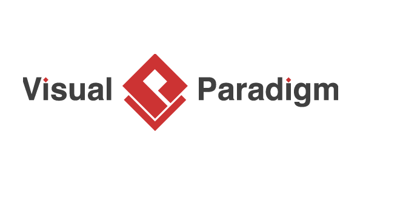

Technical Resources
| Logo | Software | System Requirements | Description |
|---|---|---|---|
| XAMPP | Windows, macOS, Linux | A free and open source cross-platform web server solution stack package developed by Apache Friends. It is a simple, lightweight Apache distribution that makes it extremely easy for developers to create a local web server for testing and deployment purposes. |
|
| MAMP | macOS, Windows | MAMP installs a local server environment in a matter of seconds on your computer. It comes free of charge, and is easily installed. |
|
|  | Visual Paradigm | Windows | A software design tool tailored for agile software projects. It supports UML, BPMN, ERD, DFD, SysML. It also supports use cases, wireframeing, code engineering, and many more. |
| DB Browser SQLite | Windows, macOS | DB Browser for SQLite is a high quality, visual, open source tool to create, design, and edit database files compatible with SQLite. It is for users and developers wanting to create databases, search, and edit data. It uses a familiar spreadsheet-like interface, and you don't need to learn complicated SQL commands. |